Manufacturing Infrastructure
Conventional Machines
| 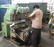 | Milling Machines – Max Speed: 2200 RPm – Max Mvmnt X-1000/Y-400/Z-300 | 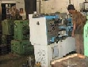 | Lathe – Max Speed: 2200 RPM – Max swing: 500 mm |
| 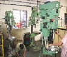 | Pillar Drilling Machines – Max Length: 680mm – Max Dia – 45mm | 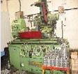 | Cylindrical Grinding Machine – Max Length: 1.2 mts – Max Dia – 200mm |
| 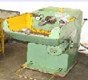 | ID Honing Machine – Max Dia – 80mm |
CNC Machines
| 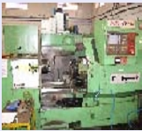 | 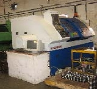 | Lathes – machines Max Speed : 3000 RPM Max Length X-725 mm/Z-450mm Max Dia : 250mm Accuracy : 5 - 10 Microns |
| VMCs– machines
Max Length: X-850mm/Y-500mm/Z-600mm Max Speed: 8000 RPM Accuracy: 5-10 Microns | 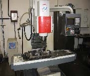 | 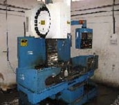 | 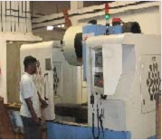 |
Quality Infrastructure
| 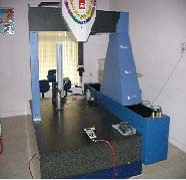 | 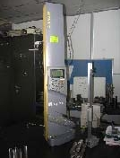 |
|
Design Infrastructure
| 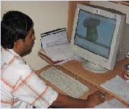 |